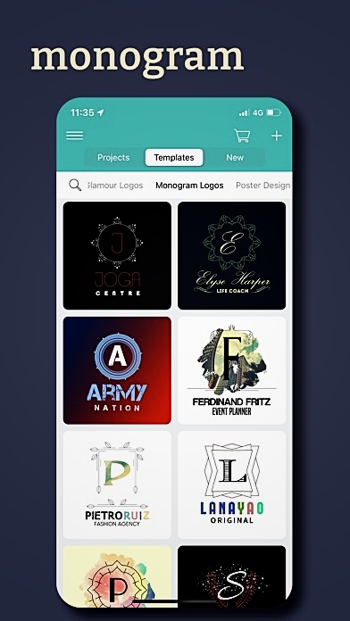
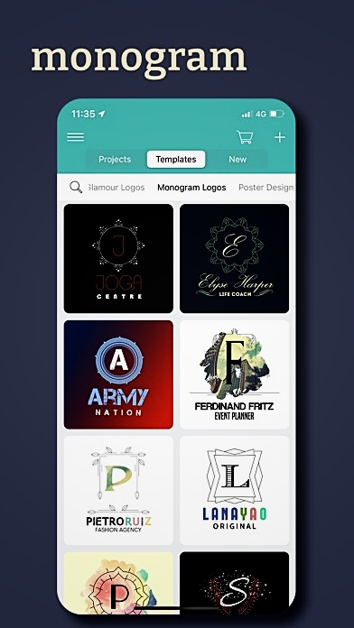

Vintage® Features
With Vintage Logo Maker, you can create professional-looking logos, flyers, labels, invitation cards, etc. in classic or modern vintage, minimal or watercolor style! With an incredibly huge amount of artwork in the app, the possible combinations are limitless!
If you looking for something to work as a fast solution to a logo problem, our logo maker app offers the quickest and easiest solution.
WHAT OUR CUSTOMERS USE VINTAGE LOGO MAKER FOR:
- creating small business logo ideas
- creating inspirational quotes
- for Facebook posts
- making business cards
- making flyers
- creating personalized cards
- designing t-shirt logo mockups
- dressing up a blog
- creating quick mockups
- creating a unique lock screen/home screen
- designing logos and watermarks
- creating birthday cards
- customizing Instagram photos
- using it to brainstorm before getting into Illustrator
FEATURES:
- universal: available for all sizes of iPhone and iPad
- both portrait and landscape orientation support
- optimized for iOS 15
GRAPHIC DESIGN:
- 2000+ premade design templates
- 7000+ royalty-free professional looking backgrounds, badges, decoration templates created by professional graphic designers
- more than 350 fonts included
- 100 vintage, watercolor & glamour overlays
- access to popular photo sites (Pixabay and Unsplash) to search and download over 2 million royalty-free images
EDITING FEATURES:
- easy-to-use interface
- advanced layer editing: you can lock-unlock, flip, duplicate and change the opacity of badges, decorations, and fonts
- blur your background images
- put different overlays (distress effects) on any objects
- adjust font spacing and type curved text around a badge
- browse between fonts not only horizontally but vertically
- link and move more artworks together
- change the order of objects (layers)
- snap to the center feature
- flip objects vertically and horizontally
- advanced coloring option: save your favorite color, check your recently used color or add your color manually typing RGB code
- with Fine Tune, you can make a step by step fine adjustments to obtain a more precise design
- if you make a mistake with designing use undo-redo feature
IMPORT OPTIONS:
- import your own photos and fonts from Camera Roll or cloud services
- browse free fonts on the Web and import them directly into the app
SAVE OPTIONS:
- store your creations in the app and edit them later
- you can save your logo design with or without background (transparent mode)
- crop your finalized design to a required size
- export your design to Camera Roll or to the cloud
SHARE OPTIONS:
- share your projects between iOS devices by uploading a backup to the cloud
- you can easily share your design via E-Mail, Instagram, Twitter or Facebook.
INSTALL NOW
👉🽠Download Vintage Logo
 
